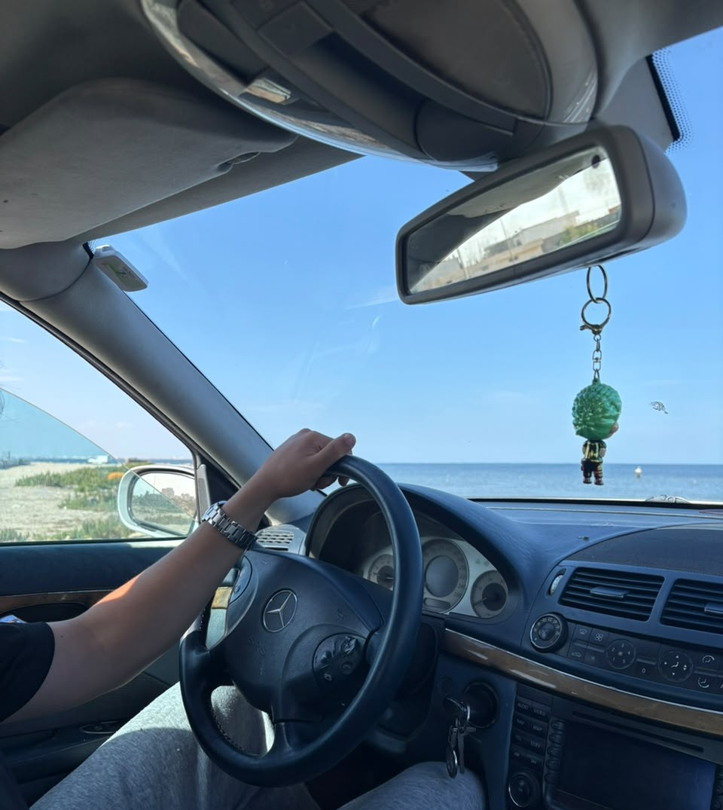

midnightblue
midnightblue
Every oil change. Every filter. The brakes, the suspension, the whole front end.
All of it lived in my head.
Not a notebook. Not an app. My head. The same head that forgets why it walked into the kitchen.
So I built something. It's called Midnight Garage, it's public, and it's my first real project: github.com/midnightbluelog/w211-tracker
Here's how it went. The good parts, and the parts I'm not going to pretend about.
meet the car
2004 Mercedes W211. E 220 CDI. Diesel, manual. 412,000 km. No rust.
Yes, four hundred and twelve thousand. And it drives like it doesn't care.
Somehow the world decided that a perfectly working machine, strong engine, luxurious, zero rust, is worth about 1/20 of a new car. I think that's crazy. Old doesn't mean finished.
In Tunisia these cars cost a lot because of taxes, so owning one is kind of every guy's dream here. I do have rental cars, but that's business. One of them is an MG3, and driving it is honestly a punishment lol. This one is different. This one is mine.
A car is personal. It buys you freedom. It's also a responsibility.
So I'm restoring it the right way. Suspension, brakes, the front end, bodywork, paint. After one of the big repairs I took it out, and I felt adrenaline. Like, real happiness. Like I'm building something that lasts.
And the record of all that work? In my head. Basically.
Yeah. That's the problem.
so what does it do
- logs a service in under 15 seconds. Tap what got done, type the mileage, save. I timed it.
- tells me what's due, by kilometres and by time. Parts wear when you drive, but brake fluid and coolant get old even when the car just sits there.
- a watch list of known problems for this exact car and engine, filtered to my mileage. Basically "things that might betray you at 412,000 km."
- a health score for the whole car. We'll get to that one. It's a story.
- an AI mechanic. Tell it what's wrong, answer 4 questions, get a list of likely causes. It runs on my own PC for now. Free.
The look is an 80s/90s amber screen, old-school instrument lighting vibes.
Funny story. I told Claude I wanted it to feel like a Gameboy. I got a literal Gameboy. D-pad, buttons, START and SELECT, the whole thing. Bro. I meant the era, not the toy lol.
Lesson: when you work with AI, describe the feeling and the shape. Otherwise it takes you word for word.
the 100% lie
The first version of the health score said my car was 100% healthy.
Cool. Except the app had zero data on my brake fluid, my coolant and my glow plugs. It just ignored everything it didn't know and handed me a perfect score.
My honest reaction: this is bs.
Me, I'd never believe it. I'm the one building it, I know my car. But picture someone who knows nothing about cars. They open the app, see 100%, and relax. Meanwhile their brake fluid might be ten years old.
A pretty number on a car app isn't harmless. It can get someone hurt.
So I wrote a new formula myself:
- every service gets a weight for how much it matters. Brakes and oil count the most.
- the app tracks how much of the car it actually knows about.
- health = condition × knowledge. Stuff it doesn't know pulls the score down until you log it.
- overdue brakes cap everything at 60%. No matter how good the rest looks.
My car went from a fake 100% to an honest 64%.
Worse number. Way better app. Honesty first.
And that bug gave me the next idea. When the app doesn't know something, it shouldn't guess. It should ask. "When was your brake fluid last changed? Not sure? Here's how to check it in 2 minutes."
It should also figure out who it's talking to. Someone who says "the thing under the hood" and someone who says "expansion tank" need different answers. The words people use tell you so much about what they actually know. I want this to work for someone with zero knowledge and for the pros. The whole spectrum.
ok but who actually built it
Let's get this out of the way, because someone's going to say it.
Claude wrote most of the code.
Here's what I did:
- wrote the specs and made the design calls
- reviewed every milestone until I could explain how each part works
- used it with my real car and, in about 20 minutes, found real problems the AI missed. Like the year field happily accepting "20040913" lol
- caught the fake 100%
- typed my first real code into it myself, a new engine variant for the VIN decoder, and ran the tests on my own
There was also a bug where old copies of the app were still running in the background, answering instead of the new one. Ghost servers. Sounds cool. I'd love to tell you it taught me something deep. It didn't. Claude found it, I watched. Not every bug is a lesson lol.
Do I feel like a fraud? Nah. Not at all.
I'm directing, and I'm learning at the same time. This is the very beginning. I can't know everything yet, and repetition is how I learn.
The way I see it, every real project needs a team. AI is just different members of that team. And projects with huge teams still fail all the time. Not because they're missing people. Because the vision was missing. The direction was missing.
That's what I bring. While I keep getting more technical, because I want to be able to do most of this myself. Not to prove anything to anyone. To understand it, so I can shape it however I want.
If you read this and think "he didn't really build it, the AI did"... honestly? That's irrelevant to me. This is my journey. This is how I started.
what's next
For Midnight Garage:
- the app asks instead of guessing
- it adjusts to how much the owner knows
- the AI mechanic gets a much smarter brain
The bigger dream: a place for anyone with an old car they love. Photos, how driving it feels, problems you post, and one day a community fixing them together.
First it helps me. Then it helps people.
just start
This isn't only for people who want to get into AI and think they're too late. It's for anyone.
We measure how late we are in numbers. Age. Years. Timelines. But those numbers aren't who we are. Some people do in 5 months what others chase their whole lives, sometimes their parents before them too.
So when you start doesn't really matter. I'm learning that too.
As long as you just fucking start.
See you in the next one.
midnightblue